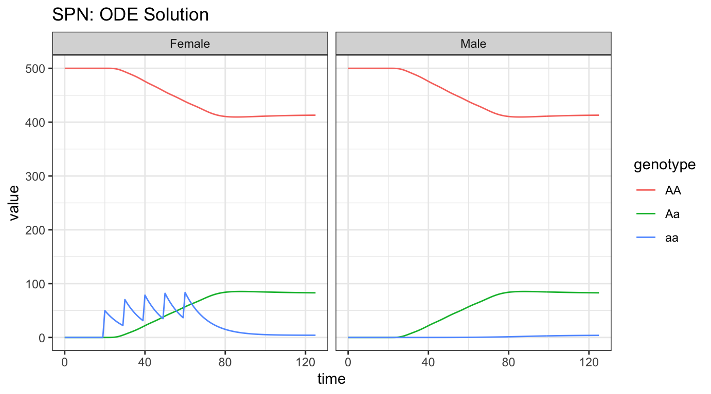
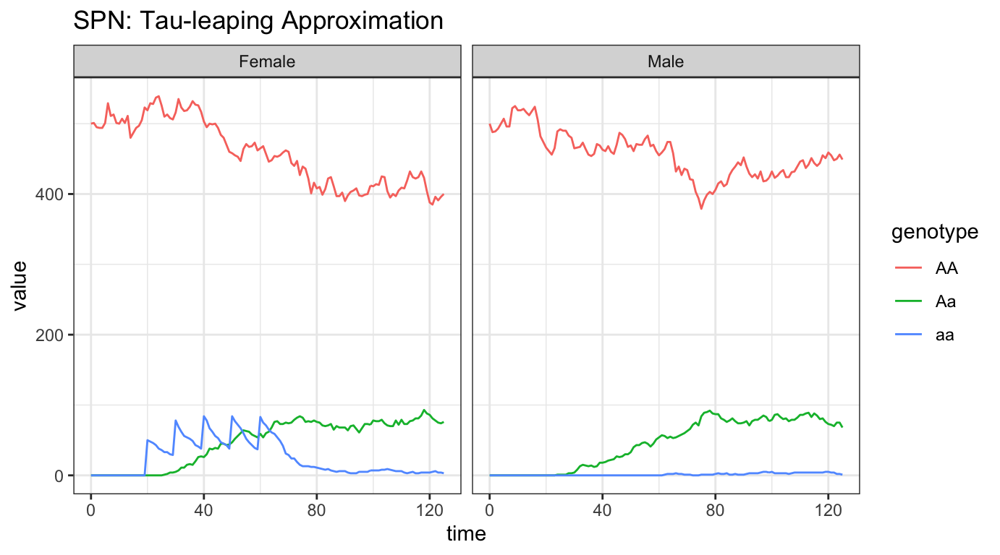
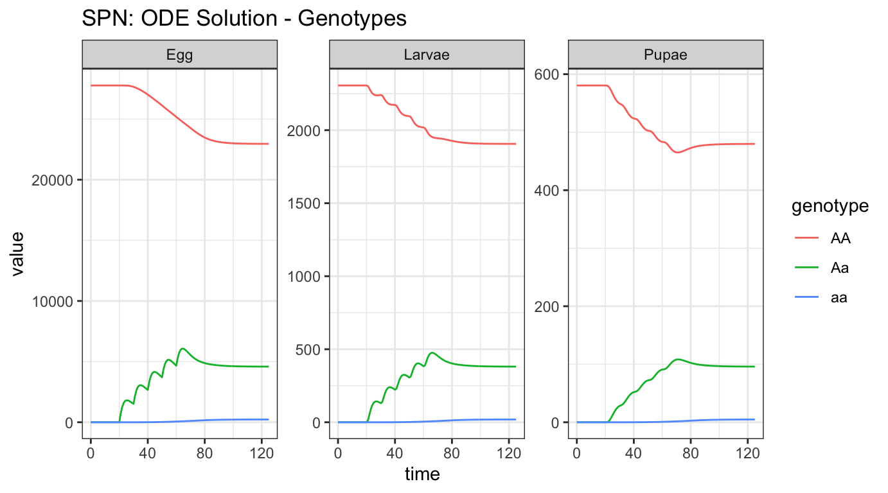
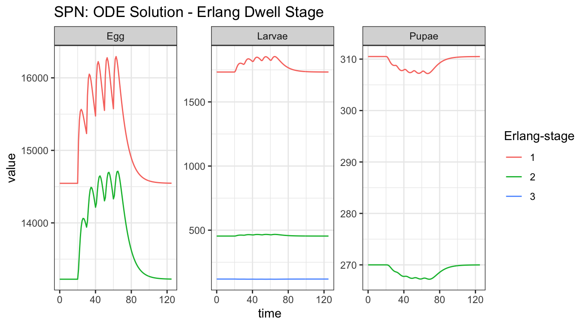
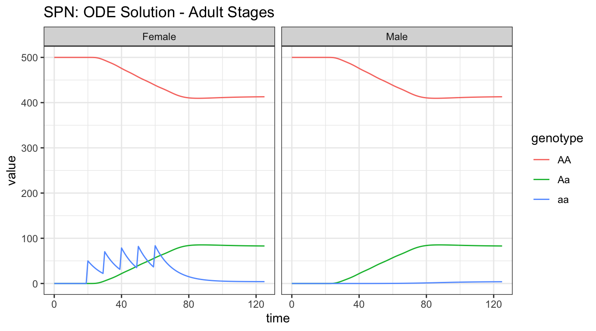
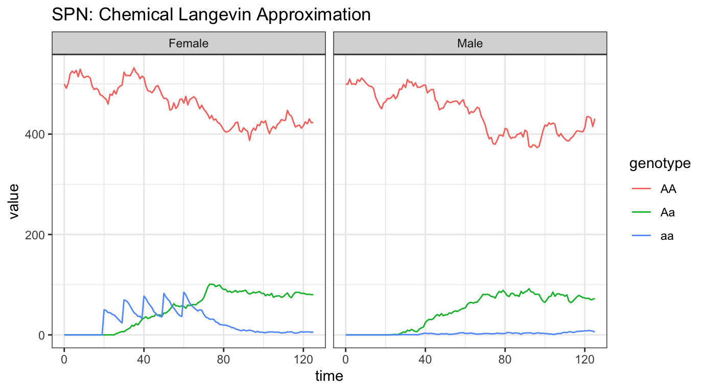

lifecycle-node.RmdIn this vignette, we show how to run MGDrivE2 simulations using a variety of sampling techniques, including deterministic integration with ODE solvers from the deSolve package. We demonstrate a logistic (carrying capacity) form of larval mortality as well as the Lotka-Volterra form. While the behavior of the two types of density-dependent mortality will be nearly identical, because they are both quadratic in the number of larvae, this is meant to demonstrate the relative ease at which new density-dependent (and in general, any hazard, see “MGDrivE2: Simulation of Time-inhomogeneous Stochastic Processes (Seasonality)” for a more complex example) functions can be swapped as necessary for the simulation task at hand.
We start by loading the MGDrivE2 package, as well as the MGDrivE package for access to inheritance cubes and ggplot2 for graphical analysis. We will use the basic cube to simulate Mendelian inheritance for this example.
# simulation functions
library(MGDrivE2)
#> Loading MGDrivE2: Mosquito Gene Drive Explorer Version 2
# inheritance patterns
library(MGDrivE)
#> Loading MGDrivE: Mosquito Gene Drive Explorer
# plotting
library(ggplot2)
# basic inheritance pattern
cube <- MGDrivE::cubeMendelian()Next, we set entomological parameters that dictate life-history characteristics, as well as the equilibrium number of adult female mosquitoes. The density dependent per-capita larval mortality is thus: \(\mu_{L}(1 + \frac{L}{K})\), where \(L\) is the current larval population size. Note that when the population is zero there is no effect of density dependence.
The parameters qE, qL, and qP are the mean dwell times in the egg, larval, and pupae stages, respectively. The Erlang distributed aquatic stages allow users to select the mean and variance of the dwell time distribution for each stage. For example, \(\frac{1}{q_{E}}\) will give the mean dwell time in the egg stage, and variance \(\frac{1}{n_{E} \cdot q_{E}^{2}}\). A table of (case-sensitive) biological parameters the user needs to specify is given below (Note that all parameters must be specified as rates per day). The equilibrium constant for larval density dependence (K) is returned when equilibrium is calculated.
The nu parameter gives the rate at which unmated female mosquitoes mate when males become available again. Ordinarily, female mosquitoes are assumed to mate upon emergence if males are present. However if male mosquitoes become locally extinct and are later replenished either by currently developing egg batches or releases (or for metapopulation simulations, inbound male migration), then there will be some time where newly emerging adult females are unable to find mates. These unmated female mosquitoes experience mortality at the same rate as mated females, muF. Because they are unmated, they do not produce eggs, nor do they blood-feed (which is done in order to provision developing egg batches). While blood-feeding behavior doesn’t matter for lifecycle simulations, this means that for the epidemiological simulations we don’t need to worry about unmated females becoming infected, because they will not be biologically primed for this behavior until after they have mated and need to produce egg batches. Once males become available, they will mate at rate nu.
| Parameter | Description |
|---|---|
qE |
inverse of mean duration of egg stage |
nE |
shape parameter of Erlang-distributed egg stage |
qL |
inverse of mean duration of larval stage |
nL |
shape parameter of Erlang-distributed larval stage |
qP |
inverse of mean duration of pupal stage |
nP |
shape parameter of Erlang-distributed pupal stage |
muE |
density-independent egg mortality |
muL |
density-independent larval mortality |
muP |
density-independent pupal mortality |
muF |
density-independent adult female mortality |
muM |
density-independent adult male mortality |
beta |
rate of egg production in adult females |
nu |
mating rate of unmated females |
# number of adult female mosquitoes
NF <- 500
# entomological parameters
theta <- list(
qE = 1/4,
nE = 2,
qL = 1/3,
nL = 3,
qP = 1/6,
nP = 2,
muE = 0.05,
muL = 0.15,
muP = 0.05,
muF = 0.09,
muM = 0.09,
beta = 16,
nu = 1/(4/24)
)The next thing we need to do is set up the structural properties of the SPN model (technically just a Petri Net, PN, at this point). First, we set all of the “places” in the model. As this is a compartmental model, “places” are simply distinct life stages (and locations for metapopulation versions). Thus, the “places” include all aquatic stages (number of bins in each egg, larval, and pupal stages), adult males, and adult females (further separated by mate genotype). All of these stages are unique for each genotype as well, so the number of “places” (i.e., compartments) grows with the number of genotypes and Erlang-distributed stage length.
Once the places for the SPN are setup, we define the transitions between each place. Transitions are how objects move from one compartment to another. These are not the rates that objects change compartments, only whether or not such a move is possible. The rate of movement from one “place” to another are calculated later by the spn_hazards() function.
Finally, as not all transitions apply to all “places”, we create a summary of possible transitions to and from each “place”. This is handled by the spn_S() function.
# "Places"
# These are defined by Erlang-distributed life stages and genotypes
SPN_P <- spn_P_lifecycle_node(params = theta,cube = cube)
# Transitions
# This is a list of viable transitions from one "place" to another
SPN_T <- spn_T_lifecycle_node(spn_P = SPN_P,params = theta,cube = cube)
# Stoichiometry matrix
# A sparse matrix representing the effect of each transition on each place
S <- spn_S(spn_P = SPN_P, spn_T = SPN_T)Once the “places” are defined, we use equilibrium_lifeycle() to get initial conditions (\(M(0)\)), solved at the dynamic equilibrium for NF number of adult females, as well as the density-dependent constants for larval competition, either K (logistic dependence) or gamma (Lotka-Volterra dependence).
# calculate equilibrium and setup initial conditions
# outputs required parameters in the named list "params"
# outputs intial equilibrium for adv users, "init
# outputs properly filled initial markings, "M0", vectorized over:
# all patches
# any genotypes( includes XX/XY inheritance patterns)
# allows initial ratios to vary
# properly mates males/females
initialCons <- equilibrium_lifeycle(params = theta, NF = NF, phi = 0.5,
log = TRUE, spn_P = SPN_P, cube = cube)The transitions in our SPN define possible movement from one compartment to another, but they do not define the rate that these changes occur. The rate of change from one compartment to another is called a “hazard”, calculated by the spn_hazards() function. This calculates the rate of change from one compartment to another. Below, we make both a set of exact hazards, for sampling algorithms with integer valued state spaces, and a set of approximate hazards, for algorithms using a continuous approximation.
# approximate hazards for continous approximation
approx_hazards <- spn_hazards(spn_P = SPN_P, spn_T = SPN_T, cube = cube,
params = initialCons$params, type = "life",
log = TRUE, exact = FALSE, tol = 1e-8,
verbose = FALSE)
# exact hazards for integer-valued state space
exact_hazards <- spn_hazards(spn_P = SPN_P, spn_T = SPN_T, cube = cube,
params = initialCons$params, type = "life",
log = TRUE, exact = TRUE, tol = NaN,
verbose = FALSE)Finally, before we run simulations, we set up a release scheme to generate interesting dynamics. We will release 50 adult females with homozygous recessive alleles 5 times, every 10 days, starting at day 20. Releases are possible at every life-stage, so long as the event name matches the place in the simulation. It is critically important that the event names match a place name in the simulation. The simulation function checks this and will throw an error if the event name does not exist as a place in the simulation. This format is used in MGDrivE2 for consistency with solvers in deSolve.
# releases
r_times <- seq(from = 20, length.out = 5, by = 10)
r_size <- 50
events <- data.frame("var" = paste0("F_", cube$releaseType, "_", cube$wildType),
"time" = r_times,
"value" = r_size,
"method" = "add",
stringsAsFactors = FALSE)The first simulation we will run is a mean-field deterministic approximation to the full stochastic model. Formally, this is a moment-closure technique where we model the 1st moment and ignore contributions from all higher order moments, so we can expect that the ODEs will approximate the mean of stochastic simulations well only when nonlinear effects and influence of higher order moments are small. For this continuous-state approximation, we need to use the approximate hazards, created by setting the following parameters exact = FALSE, tol = 1e-8 (above) in the function spn_hazards(). When used in ODE approximation, the interpretation of hazard functions simplifies to simple rate functions.
Internally, MGDrivE2 uses the high quality numerical solvers in from deSolve to integrate a mean-field approximation to the stochastic model. Effectively, it evaluates the ODEs over the interval between time points where the user requested model output, calculating the rate of that hazard, given the current simulation state, multiplied with the stoichiometry matrix. The default method used is lsoda, though for highly variable rates and inhomogeneous systems, consider using rk4.
Now that the deterministic model is fully specified, let’s run the simulation for 200 days, outputting values of the state variables every day.
# max simulation time
tmax <- 125
# time-step for output return, not the time-step of the sampling algorithm
dt <- 1
# run deterministic simulation
ODE_out <- sim_trajectory_R(x0 = initialCons$M0, t0 = 0, tt = tmax, dt = dt, S = S,
hazards = approx_hazards, sampler = "ode", method = "lsoda",
events = events, verbose = FALSE)MGDrivE2 has several helper functions for summarizing simulation data in a nice format for plotting. Here, we will look at the adult male and female data, though there are many more options explored below.
# summarize females by genotype
ODE_out_f <- summarize_females(out = ODE_out$state, spn_P = SPN_P)
# summarize males by genotype
ODE_out_m <- summarize_males(out = ODE_out$state)
# add sex for plotting
ODE_out_f$sex <- "Female"
ODE_out_m$sex <- "Male"
# plot
ggplot(data = rbind(ODE_out_f, ODE_out_m)) +
geom_line(aes(x = time, y = value, color = genotype)) +
facet_wrap(facets = vars(sex), scales = "fixed") +
theme_bw() +
ggtitle("SPN: ODE Solution")
We see the initial equilibrium at 500 females, as was set above, and 500 males, because we defined an equal sex breakdown in the population. At time t = 25, we see the first release of aa females into the population, and then the 4 subsequent releases. Notice that releases only appear in the females, nothing was released into the males. Since there are no fitness costs, we see the aa individuals come to equilibrium predominantly as heterozygotes, i.e. Aa, with a very small fraction of homozygotes, and the majority of the population remaining AA.
For stochastic simulations, we generally rely on tau-leaping; this method retains the integer valued state space, thus necessitating the use of exact hazards. The theoretical basis of tau-leaping depends upon realizing that each transition can be represented as a Poisson process; tau-leaping is therefore an Euler-method for solving continuous-time Markov chains where the “tau-leaping” refers to a fixed time-step of size “tau”, where the number of each transition that fires over such a time-step (\(\Delta t\)) is approximated by a Poisson random variable with a linear approximation to the cumulative hazard. This is provided as the dt_stoch an argument to the function sim_trajectory_R().
We set tau as our sampler type, use the same release events, conditions, and stoichiometry matrix as above, set the exact hazards instead of the approximate, and finally run the simulation and plot the output.
# delta t
dt_stoch <- 0.1
# tau sampling
PTS_out <- sim_trajectory_R(x0 = initialCons$M0, t0 = 0, tt = tmax, dt = dt,
dt_stoch = dt_stoch, S = S, hazards = exact_hazards,
sampler = "tau", events = events, verbose = FALSE)
# summarize females/males
PTS_out_f <- summarize_females(out = PTS_out$state, spn_P = SPN_P)
PTS_out_m <- summarize_males(out = PTS_out$state)
# add sex for plotting
PTS_out_f$sex <- "Female"
PTS_out_m$sex <- "Male"
# plot adults
ggplot(data = rbind(PTS_out_f, PTS_out_m)) +
geom_line(aes(x = time, y = value, color = genotype)) +
facet_wrap(facets = vars(sex), scales = "fixed") +
theme_bw() +
ggtitle("SPN: Tau-leaping Approximation")
As Tau-leaping is a stochastic approximation of our system, we should see some variation around the solution provided by the ODE simulation above. These simulations begin at the proper equilibrium amount, 500 individuals of each sex, with releases performed in females and an equilibrium shortly thereafter. The plots are heuristically similar to the ODE solution, which is good, but notice the slow trend of Aa individuals towards extinction. Since there is such a small amount of a alleles in the population, they are steadily being lost through stochastic drift. If we carried the simulations out longer, it is possible that the a allele will be completely lost from the population.
Now we will show an example with the Lotka-Volterra style density dependence in larval stages. Please note that we do not need to recreate the structural pieces of the Petri Net (places and transitions), or update any of the parameters, because they remain the same; we simply need to calculate a new equilibrium point and generate new hazards.
To use Lotka-Volterra density dependence, we need to recalculate the equilibrium and then rebuild the hazard functions. The per-capital larval mortality is \(\mu_{L} + \gamma L\), noted by log = FALSE in the options to equilibrium_lifeycle().
# using the same parameters as above, along with the SPN_P object already created
# calculate equilibrium for lotka-volterra dynamics
initialCons <- equilibrium_lifeycle(params = theta, NF = NF, phi = 0.5,
log = FALSE, spn_P = SPN_P,cube=cube)We now follow the same steps as before to make the vector of hazards (setting log = FALSE).
# approximate hazards for continous approximation
approx_hazards <- spn_hazards(spn_P = SPN_P, spn_T = SPN_T, cube = cube,
params = initialCons$params, type = "life",
exact = FALSE, tol = 1e-8, verbose = FALSE,
log = FALSE)
# exact hazards for integer-valued state space
exact_hazards <- spn_hazards(spn_P = SPN_P, spn_T = SPN_T, cube = cube,
params = initialCons$params, type = "life",
exact = TRUE, tol = NaN, verbose = FALSE,
log = FALSE)We will use the releases defined above, and again begin with an ODE solution to our system, before testing a different stochastic sampler.
As before, we run an ODE simulation, but this time we will plot the aquatic stages in two ways: looking at their genotypes over time, and looking at the progress through Erlang-distributed stages.
# deterministic simulation
ODE_out <- sim_trajectory_R(x0 = initialCons$M0, t0 = 0, tt = tmax, dt = dt,
S = S, hazards = approx_hazards, sampler = "ode",
events = events, verbose = FALSE)
# summarize aquatic stages by genotype
ODE_out_e <- summarize_eggs_geno(out = ODE_out$state, spn_P = SPN_P)
ODE_out_l <- summarize_larvae_geno(out = ODE_out$state, spn_P = SPN_P)
ODE_out_p <- summarize_pupae_geno(out = ODE_out$state, spn_P = SPN_P)
# add stage name
ODE_out_e$stage <- "Egg"
ODE_out_l$stage <- "Larvae"
ODE_out_p$stage <- "Pupae"
# plot by genotype
ggplot(data = rbind(ODE_out_e, ODE_out_l,ODE_out_p)) +
geom_line(aes(x = time, y = value, color = genotype)) +
facet_wrap(facets = vars(stage), scales = "free_y") +
theme_bw() +
ggtitle("SPN: ODE Solution - Genotypes")
Notice the vastly different equilibrium number for the aquatic stages. These values are parameterized from the adult female value, and the death rates at each stage. Notice that the “releases” here appear to be Aa individuals - this is because our released females (aa) mated with wild-type males (AA), and produced heterozygous (Aa) offspring. Also notice how the releases are smoothed out from Egg to Larvae and Larvae to Pupae stages, due to the death in each stage. We can also see a small dip in the pupal stage, stemming from the over-compensation of density-dependent mortality in the larval stage, before returning to equilibrium.
We can also explore the aquatic stages by dwell time instead of genotype.
# summarize aquatic stages by Erlang stage
ODE_out_e <- summarize_eggs_stage(out = ODE_out$state, spn_P = SPN_P)
ODE_out_l <- summarize_larvae_stage(out = ODE_out$state, spn_P = SPN_P)
ODE_out_p <- summarize_pupae_stage(out = ODE_out$state, spn_P = SPN_P)
# add stage name
ODE_out_e$stage <- "Egg"
ODE_out_l$stage <- "Larvae"
ODE_out_p$stage <- "Pupae"
# plot by Erlang stage
ggplot(data = rbind(ODE_out_e, ODE_out_l,ODE_out_p)) +
geom_line(aes(x = time, y = value, color = `Erlang-stage`)) +
facet_wrap(facets = vars(stage), scales = "free_y") +
theme_bw() +
ggtitle("SPN: ODE Solution - Erlang Dwell Stage")
This plot shows how individuals are moving through each aquatic stage. There are significantly more individuals in the first Erlang-stage, compared to the second Erlang-stage, and we clearly see how the large increase in eggs is attenuated by death through the larval stage, and the effect of density-dependence actually lowering the amount of larvae that make it to the pupal stage.
Finally, for comparison with the logistic density-dependent dynamics above, and a different stochastic sampler below, we plot the adult stages.
# summarize females/males
ODE_out_f <- summarize_females(out = ODE_out$state, spn_P = SPN_P)
ODE_out_m <- summarize_males(out = ODE_out$state)
# add sex for plotting
ODE_out_f$sex <- "Female"
ODE_out_m$sex <- "Male"
# plot adults
ggplot(data = rbind(ODE_out_f, ODE_out_m)) +
geom_line(aes(x = time, y = value, color = genotype)) +
facet_wrap(facets = vars(sex), scales = "fixed") +
theme_bw() +
ggtitle("SPN: ODE Solution - Adult Stages")
Notice the similarity with the logistic density-dependent solution. Since there are no fitness effects or complex dynamics happening here, the solutions are effectively the same.
As an alternative to tau-leaping, which is a discrete stochastic approximation, we investigate a continuous stochastic approximation (Chemical Langevin equation) to the full stochastic model. Theoretically, the CLE approximation is a second-order approximation using continuous state; it is the Fokker-Planck approximation to the Master equation (Kolmogorov Forwards Equations) of the integer valued stochastic process. Because we rely on a relatively simple Euler-Maruyama scheme to solve the system of stochastic differential equations, much like tau-leaping, the user must provide a \(\Delta t\) to the sim_trajectory_R() function, and specify the cle sampler.
Note the change in the sampler, to cle, and the use of approximate hazards.
# chemical langevin sampler
CLE_out <- sim_trajectory_R(x0 = initialCons$M0, t0 = 0, tt = tmax, dt = dt,
dt_stoch = dt_stoch, S = S, hazards = approx_hazards,
sampler = "cle", events = events, verbose = FALSE)
# summarize females/males
CLE_out_f <- summarize_females(out = CLE_out$state, spn_P = SPN_P)
CLE_out_m <- summarize_males(out = CLE_out$state)
# add sex for plotting
CLE_out_f$sex <- "Female"
CLE_out_m$sex <- "Male"
# plot adults
ggplot(data = rbind(CLE_out_f, CLE_out_m)) +
geom_line(aes(x = time, y = value, color = genotype)) +
facet_wrap(facets = vars(sex), scales = "fixed") +
theme_bw() +
ggtitle("SPN: Chemical Langevin Approximation")
Looking at this final set of plots, we immediately see the similarity with the ODE solution above. This is an indication that the stochastic time-step is sufficient for an accurate approximation.